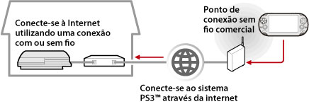

Rede > Uso remoto (através da Internet)
Uso remoto (através da Internet)
Para usar este recurso em um sistema PS Vita ou um sistema PSP™, você poderá precisar atualizar o software do sistema PS3™ e o sistema PS Vita ou o sistema PSP™.
Usando um dispositivo que suporta o uso remoto, tal como um sistema PS Vita ou um sistema PSP™, e um ponto de acesso sem fio, você poderá conectar seu sistema PS3™ via Internet. Para utilizar o uso remoto, o sistema PS3™ deve estar definido no modo auxiliar de conexão de uso remoto.

Dica
O método de uso e custo de um serviço de ponto de acesso sem fio comercial (LAN sem fio) variam dependendo do provedor do serviço. Para obter detalhes, contate o provedor de serviços.
Preparando (1) (sistema PS3™ e o dispositivo compatível com o uso remoto)
Para utilizar o uso remoto pela primeira vez, você deve registrar (conectar) o dispositivo que suporta o uso remoto, tal como um PS Vita ou sistema PSP™, no sistema PS3™. Para registrar (conectar) o sistema, selecione  (Configurações) >
(Configurações) >  (Configurações de uso remoto) > [Registrar dispositivo].
(Configurações de uso remoto) > [Registrar dispositivo].
Preparando (2) (dispositivo que suporta o uso remoto)
Crie uma conexão de rede para conectar o PS Vita ou o sistema PSP™ a um ponto de acesso. Para utilizar o uso remoto via Internet, você poderá usar um ponto de acesso sem fio. Para obter detalhes sobre as configurações de rede em um dispositivo que suporta o uso remoto, consulte o manual de instruções fornecido com o dispositivo.
Utilizando o uso remoto em um sistema PS Vita
1. |
No sistema PS3™, selecione |
|---|
 (Rede) >
(Rede) >  (Uso remoto).
(Uso remoto).2. |
Em seu sistema PS Vita, toque em |
|---|
 (Uso remoto do PS3) > [Início].
(Uso remoto do PS3) > [Início].3. |
Toque em [Connect via Internet]. |
|---|
Dicas
- Durante o uso remoto, ao mudar para a tela de um aplicativo diferente, a conexão de uso remoto será encerrada após 30 segundos.
- No seu sistema PS Vita, conecte a conta Sony Entertainment Network que é usada no sistema PS3™. Se você criou uma conta no sistema PS Vita ou em um computador, você também pode usar essa conta no sistema PS3™.
Utilizando o uso remoto em um sistema PSP™
1. |
No sistema PS3™, selecione |
|---|---|
2. |
No sistema PSP™, selecione |
3. |
Selecione [Connect via Internet]. |
4. |
Na lista de conexões, selecione a conexão do ponto de acesso a ser utilizada para o uso remoto. |
5. |
Digite o ID de início de sessão e a senha da Sony Entertainment Network para a conta em uso. |
 (Uso remoto).
(Uso remoto).Utilizando o uso remoto através da Internet
O uso remoto através da Internet pode não funcionar dependendo do dispositivo de rede em uso. Se isto acontecer, confira as seguintes informações.
- Utilize [Teste de conexão à Internet] em
 (Configurações de rede) em (Configurações) para verificar se o sistema PSP™ pode conectar-se à Internet e à PSNSM.
(Configurações de rede) em (Configurações) para verificar se o sistema PSP™ pode conectar-se à Internet e à PSNSM. - Se o roteador em uso for compatível com o UPnP, habilite a função UPnP do roteador.
- Se o roteador em uso não for compatível com o UPnP, você deverá definir o redirecionamento de portas do roteador para que permita a comunicação com o sistema PS3™ pela Internet. O número de porta utilizado pelo uso remoto é TCP: 9293. Para obter informações sobre como configurar esta opção, consulte as instruções do roteador.
- O redirecionamento de portas é uma função que redireciona os sinais que chegam em uma porta específica (de entrada) para outra porta especificada (de saída). Isto também é conhecido como "mapeamento de porta" ou "conversão de endereço".
- Se o sistema PS3™ estiver conectado à Internet por dois ou mais roteadores, a comunicação poderá não funcionar corretamente.
Dicas
- Um roteador é um dispositivo que permite que diversos dispositivos compartilhem uma única linha de Internet.
- A comunicação pode ser restrita dependendo das funções de segurança do roteador e do provedor de Internet. Consulte as instruções do dispositivo de rede em uso e as informações do seu provedor de serviços de Internet.